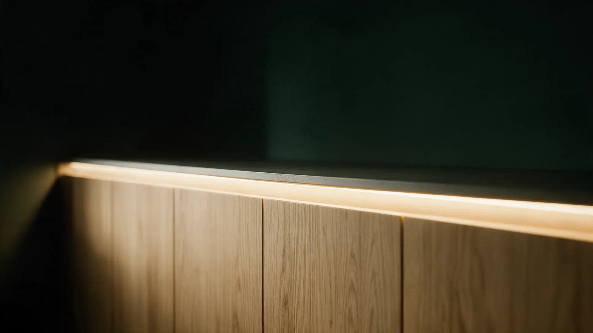
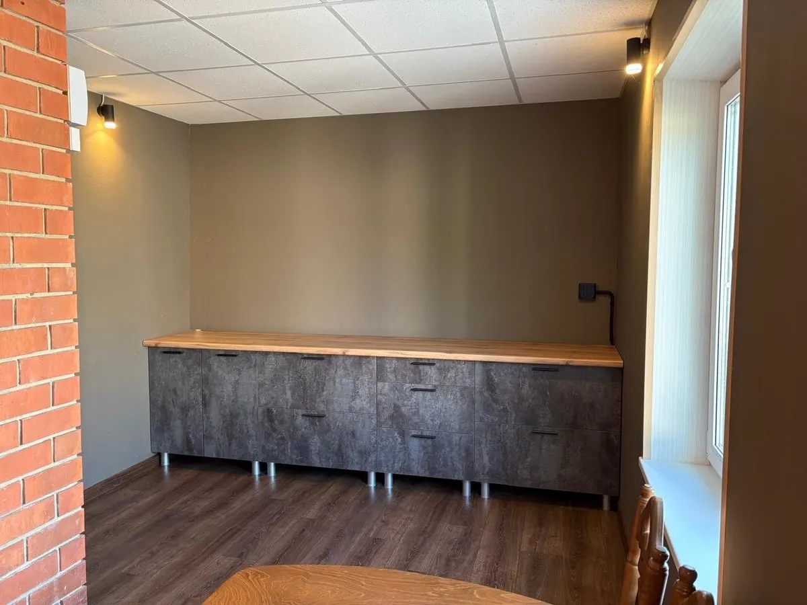
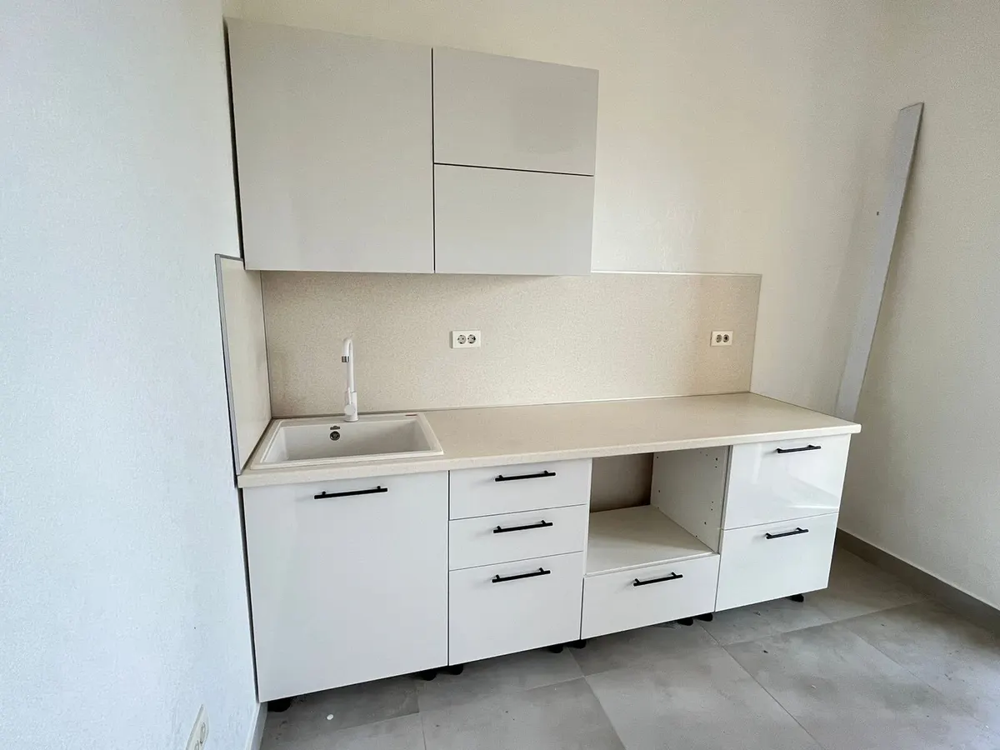
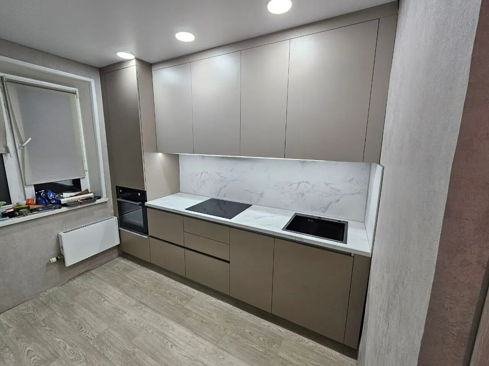
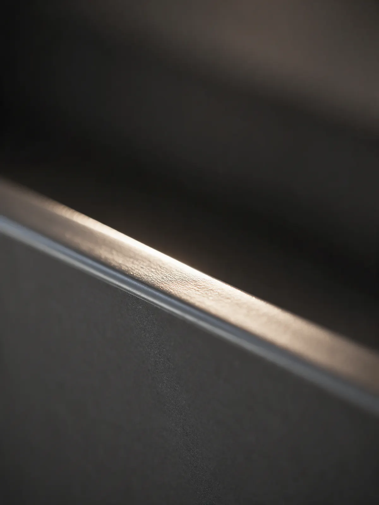
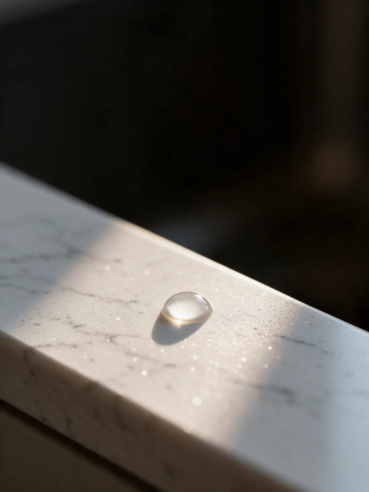
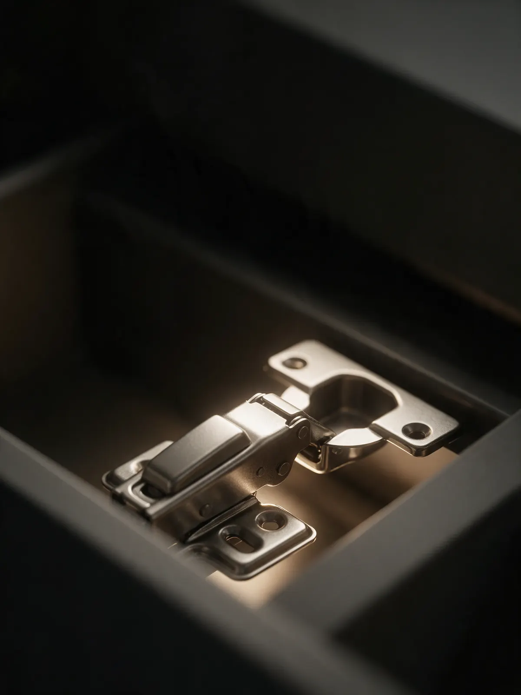

Кухни на заказ · Челябинск
Кухни на заказ в Челябинске – по вашим размерам
Присылаете размеры или план – за день даём предварительный расчёт. Точную смету и срок изготовления уточняем после замера.

- Предварительный расчёт по вашим размерам
- Ежедневно 10:00–19:00
- 239 фото в карточке Яндекс Карт
Сколько стоит
Стоимость зависит от размеров, фасадов, столешницы и фурнитуры. Пришлите план или фото стены – точную смету подготовим после замера.
Кухни на заказ
- Кухня по вашим размерампроект, фасады, столешница и фурнитурауточнить
- Предварительный расчётпо длине кухни, плану или фото с рулеткойуточнить
Дополнительная мебель
- Шкаф или прихожаяконфигурация и материалы по проектууточнить
- Гардеробнаярасчёт по плану помещенияуточнить
Цены и сроки изготовления нужно уточнить у владельца. Расчёт до замера предварительный.
Как заказать
- 01
Размеры и расчёт
Пришлите план, фото стены с рулеткой или длину и высоту кухни.
- 02
Замер
Согласуем детали проекта и уточним размеры помещения.
- 03
Проект и смета
Подберём конфигурацию, материалы и составим точный расчёт.
- 04
Согласование
Уточним стоимость, сроки изготовления и условия заказа.
- 05
Изготовление и монтаж
После согласования изготовим и установим мебель.



Что важно заранее
Размеры влияют на стоимость
Поэтому сначала нужен план, фото с рулеткой или замер.
Материалы выбираются по проекту
Фасады, столешница и фурнитура влияют на итоговую смету.
Срок нужно подтвердить
Точный срок изготовления не указан в карточке – его уточнит менеджер.
Можно написать в Telegram
Контакт карточки: @kuhni174.
Отзывы с Яндекс.Карт
«Заказывала здесь кухню после долгих поисков. Мне нужен был бюджетный, но достойный вариант. Кухня вышла не более 115 тысяч, что является подарком, а не ценой в современных реалиях. У меня была прямая кухня и пенал. Антон всегда был на связи»
Анжела Яньшина · 20 сентября 2025
«Расскажу историю приобретения кухни именно тут))) Увидела объявление в чате двора. При этом смотрела на авито различные конторы по производству и установке кухонь, и так звезды совпали , что внимание привлекли объявления именно «Кухни 174».»
Кристина Кольцова · 4 ноября 2025
«Радуюсь моей обновленной маленькой кухне.Фирму рекомендую.Мастер Антон профессионал в своем деле.Работа выполнена качественно в срок»
Ирина Сидоренко · 31 марта
Отзывы с карточки на Яндекс.Картах, без правок.
Что мы знаем после уточнения кухни
Многому нас научили чужие промахи. Приезжаешь на замер, а в старой кухне столешница состыкована посреди фартука, а цоколь под духовкой глухой, как сейф. Поэтому шесть важных моментов проверяем заранее.
Команда «Модульные кухни 74»
проектируем по размерам помещения
Столешница стыкуется на виду
Как делаем мы
Планируем стык там, где он меньше заметен, и заранее учитываем фартук, мойку и углы.Фасады не отрегулированы, зазоры гуляют
Как делаем мы
Проверяем фасады после установки, чтобы линии и зазоры выглядели ровно.Замер на глаз, а потом «подпилим на месте»
Как делаем мы
Сначала уточняем стены, трубы, окна и выводы, затем закладываем это в проект.Цоколь глухой, духовке и посудомойке нечем дышать
Как делаем мы
Учитываем вентиляцию и зазоры для техники ещё на этапе проектирования.Вытяжка не по оси плиты, розетки не там
Как делаем мы
Сверяем расположение техники, розеток и коммуникаций до изготовления.Подсветка проводом наружу
Как делаем мы
Продумываем место профиля, блока питания и выключателя, чтобы провода не были на виду.
Из чего сделано
Три вещи, которые определяют, как кухня выглядит через пять лет: фасады, столешница и фурнитура. Их состав и стоимость уточняются по проекту.

Фасады: МДФ в эмали или шпон
Выбор фасада влияет на цвет, фактуру, уход и итоговую стоимость кухни.

Столешницы: кварц или HPL
Подбираем материал под задачи, стиль помещения и согласованный бюджет.

Фурнитура с доводчиками
Фурнитуру и условия гарантии нужно уточнить у менеджера при расчёте.
Контакты
- Адрес
- ул. Кирова, 23А, ТЦ Премьера, Челябинск
- Часы
- Ежедневно 10:00–19:00
- Телефон
- +7 (951) 128-93-74